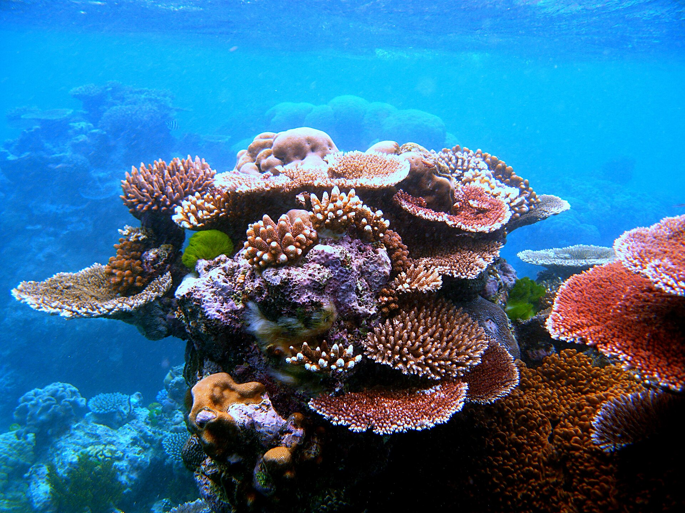
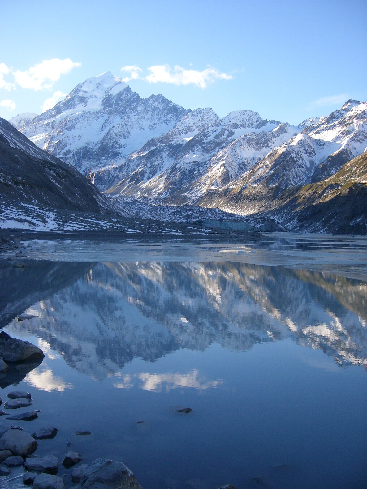
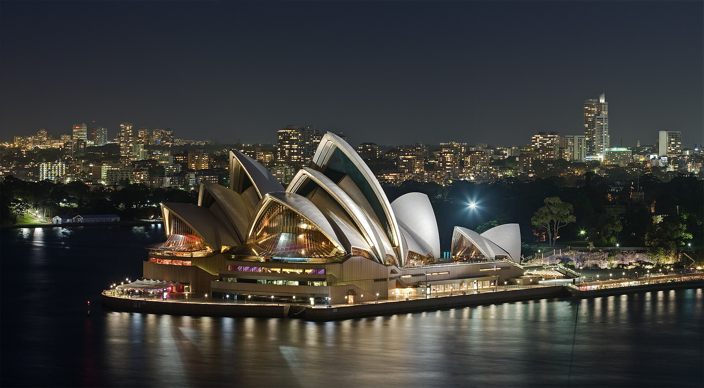

Überblick
Diese Seite behandelt zwei eng verknüpfte, aber nicht identische Rahmen: Australien als Kontinent (die kleinste der üblichen Kontinental-Landmassen) und Ozeanien als Großregion des Pazifiks. Ozeanien umfasst in gängiger Gliederung Australien, Neuseeland und die Inselwelten Melanesiens, Mikronesiens und Polynesiens. Manche Schulsysteme zählen „Australien/Ozeanien“ als einen Kontinentseintrag; andere trennen den Kontinent Australien von der pazifischen Inselregion. Hier werden beide Ebenen bewusst zusammengeführt: ohne den Pazifik bliebe Australien geografisch isoliert erzählt; ohne den Kontinent Australien fehlte Ozeanien die größte Landmasse.
Ozeanien ist vor allem durch den Pazifik definiert – ein Ozean, der größer ist als alle Kontinente zusammen. Zwischen den Inselgruppen liegen riesige Seeflächen; Entfernung, Navigation und maritime Ressourcen prägen Geschichte und Gegenwart. Politisch gehören souveräne Staaten (u. a. Australien, Neuseeland, Papua-Neuguinea, Fidschi, Samoa, Tonga, viele mikronesische Republiken) ebenso dazu wie abhängige Gebiete und, in manchen Gliederungen, Hawaiʻi als Teil Polynesiens. Grenzen zu Asien (etwa indonesische Inseln westlich von Neuguinea) und die Zuordnung einzelner Inseln sind konventionsabhängig und werden hier als solche kenntlich gemacht.
In der Geografie der Allwissenden Webseite steht diese Doppelseite neben den anderen Kontinenten. Sie betont physische Vielfalt – vom Outback bis zum Great Barrier Reef, von den Südlichen Alpen Neuseelands bis zu Atollen – und benennt indigene Völker respektvoll als Erstbewohnerinnen und Erstbewohner mit andauernden Rechten und Kulturen.
Physische Geografie

Australien: Kontinent und Outback
Australien ist ein geologisch relativ stabiler Kontinent mit alten Schilden, weiten Ebenen und dem Outback: dem arid bis semiarid geprägten Innenland. Die Great Dividing Range begleitet die Ostküste und beeinflusst Niederschlag und Flussläufe; das Murray–Darling-System ist das größte Einzugsgebiet des Kontinents. Uluru und weitere Inselberge prägen ikonische Landschaften des Inneren, ohne dass sie die gesamte Geologie repräsentieren. Australiens Flora und Fauna sind durch lange Isolation gekennzeichnet: viele endemische Arten, darunter Beuteltiere (Känguru, Koala u. a.) und die eierlegenden Kloakentiere (Schnabeltier, Ameisenigel). Der höchste Berg auf dem australischen Festland ist Mount Kosciuszko (rund 2.228 m) – bescheiden im Vergleich zu andinen oder alpinen Gipfeln, aber klimawirksam für die Snowy Mountains.
Great Barrier Reef und Meeresräume
Vor der Nordostküste Australiens liegt das Great Barrier Reef, eines der größten Korallenriffsysteme der Erde, mit einer Fläche in der Größenordnung von rund 344.400 Quadratkilometern. Es ist UNESCO-Weltnaturerbe und Hotspot der Meeresbiodiversität (Fische, Korallen, Meeresschildkröten, Meeressäuger). Korallenbleiche durch Erwärmung und Versauerung, Wasserqualität und Küstennutzung sind zentrale Schutzfragen; Statusberichte ändern sich und sollten aktuellen wissenschaftlichen Quellen entnommen werden. Weitere Riffsysteme (u. a. vor Neukaledonien) unterstreichen die pazifische Korallenvielfalt.
Neuseeland und Zealandia
Neuseeland liegt auf dem weitgehend untermeerischen Microkontinent Zealandia. Die Südlichen Alpen (Southern Alps) der Südinsel entstehen an einer aktiven Plattengrenze; Gletscher, Fjorde und hohe Gipfel (u. a. Aoraki/Mount Cook) prägen das Relief. Die Nordinsel ist vulkanisch aktiver (Vulkanplateau). Das Klima ist ozeanisch-gemäßigt, die Flora enthält endemische Arten; flugunfähige Vögel wie der Kiwi sind kulturell und ökologisch symbolisch. Neuseeland verbindet kontinentale Gebirgsnatur mit pazifischer Insellage.
Melanesien, Mikronesien, Polynesien
Melanesien (u. a. Neuguinea, Salomonen, Vanuatu, Neukaledonien, Fidschi) umfasst große kontinentale und vulkanische Inseln, oft gebirgig und regenwaldreich; Papua-Neuguinea ist sprachlich und kulturell besonders vielfältig. Mikronesien nordöstlich der Philippinen besteht vorwiegend aus kleineren Inseln und Atollen (u. a. Karolinen, Marianen, Marshallinseln, Kiribati). Polynesien spannt ein weites Dreieck zwischen Hawaiʻi, Aotearoa/Neuseeland und Rapa Nui (Osterinsel) und umfasst Samoa, Tonga, Französisch-Polynesien und viele weitere Inseln. Physisch unterscheidet man kontinentale Inseln, hohe Vulkaninseln und niedrige Korallenatolle. Atolle entstehen, wenn Korallenriffe um absinkende Vulkane wachsen und Lagunen umschließen; sie sind flach und besonders anfällig für Meeresspiegelanstieg.
Ressourcen, Feuer und Wasser
Australien besitzt bedeutende Lagerstätten (u. a. Eisen, Kohle, Gold, Bauxit, Uran) und eine stark exportorientierte Bergbauwirtschaft; zugleich sind Wasserknappheit im Inneren und Salzbelastung in Bewässerungsgebieten strukturelle Grenzen. Buschfeuer (Bushfires) sind Teil vieler Ökosysteme, können aber in Hitze- und Dürrephasen Katastrophenausmaße annehmen. Neuseelands Energie- und Landschaftsprofil ist anders: Wasserkraft, Geothermie und eine pastoral geprägte Landwirtschaft prägen Teile der Wirtschaft, während Erdbeben und Vulkanismus Infrastrukturrisiken setzen. Auf vielen Pazifikinseln bleiben Fischerei, Tourismus und Subsistenzwirtschaft zentral; Tiefseebergbau und Fischereiabkommen mit äußeren Mächten sind umstrittene Zukunftsfragen.
Neuguinea und die pazifische Plattentektonik
Die Insel Neuguinea – geteilt zwischen Indonesien (Westteil, oft als Teil Asiens diskutiert) und Papua-Neuguinea – ist gebirgig, feucht und biodiversitätsreich. Hochländer erreichen Höhen, die Schnee und kühle Klimate in äquatornaher Lage ermöglichen. Melanesien liegt am Rand des Pazifischen Feuerrings: Vulkanausbrüche und Erdbeben sind Teil der physischen Normalität. Polynesiens und Mikronesiens Inseln entstehen dagegen oft über Hotspots oder als Atolle auf absinkender Kruste. Wer Ozeanien versteht, muss Plattentektonik und Meeresspiegelgeschichte mitdenken: Viele heutige Inseln waren in Eiszeiten über Landbrücken oder flachere Schelfs verbunden, was Wanderungen von Pflanzen, Tieren und Menschen erleichterte.
Klima

Australien reicht von tropischem Norden (Monsun- und Savannenklimate) über arides Inneres bis zu gemäßigten Südosten und Südwesten. Das Outback ist heiß und trocken; Dürren und Buschfeuer sind wiederkehrende Extreme, deren Häufigkeit und Intensität im Klimawandel diskutiert werden. Die Ostküste ist feuchter; Tasmanien ist kühler und niederschlagsreicher. El Niño und der Indische-Ozean-Dipol beeinflussen Niederschlag und Temperaturen stark.
Neuseeland hat milde, ozeanische Klimate mit regionalen West–Ost-Gegensätzen an den Südlichen Alpen. Pazifische Inseln liegen überwiegend in den Tropen: hohe Inseln fangen orografischen Regen ab und tragen oft üppige Vegetation; Atolle sind heiß, feucht und auf dünne Süßwasserlinsen angewiesen. Zyklone (Hurrikane/Taifune je nach Beckenbezeichnung) treffen Inselstaaten regelmäßig. Meeresspiegelanstieg, Küstenerosion und Versalzung bedrohen flache Atollstaaten existenziell – eine geografische Tatsache, die Politik und Migrationsdebatten prägt, ohne dass hier Einzelprognosen erfunden werden.
Zyklonpfade, Monsunonset und Dürren sind für Landwirtschaft, Versicherungen und Katastrophenschutz entscheidend. In Australien prägen „wet season“ und „dry season“ im Norden den Jahresrhythmus; im Süden bestimmen Winterregen und sommerliche Hitzewellen den Alltag. Auf Atollen können Frühjahrsfluten (king tides) bereits ohne Sturm Süßwasser und Infrastruktur gefährden. Klimamodelle und Beobachtungen zeigen Erwärmung und Veränderungen der Extremereignisse; lokale Anpassungsstrategien – von Mangrovenschutz bis zu erhöhten Bauten – gehören zur angewandten Geografie der Region.
Menschen und Regionen

Indigene Völker – respektvoll benannt
Die Aboriginal Peoples Australiens und die Torres-Strait-Islander sind die indigene Bevölkerung des australischen Kontinents und der Meerenge zu Neuguinea. Ihre Verbindung zu Land („Country“), Sprachen und Wissenssystemen reicht zehntausende Jahre zurück; Kolonisation, Enteignung und Assimilationspolitik hinterließen schwere Traumata, während kulturelle Erneuerung und Rechtskämpfe (u. a. Landrechte) andauern. In Aotearoa/Neuseeland sind die Māori Tangata whenua (Menschen des Landes); der Vertrag von Waitangi (1840) und heutige Treaty-Beziehungen prägen Politik und Öffentlichkeit. In Melanesien, Mikronesien und Polynesien leben vielfältige pazifische Völker mit eigenen Sprachen, Seefahrtstraditionen und sozialen Ordnungen. Fremdbezeichnungen und koloniale Sammelbegriffe („Südsee“) verdecken diese Vielfalt; korrekte Selbstbezeichnungen und staatliche Namen sind vorzuziehen.
Staaten, Migration und Städte
Australien und Neuseeland sind hoch urbanisierte Staaten britischen Kolonialerbes mit starker Zuwanderung aus Asien und dem Pazifik. Sydney, Melbourne, Auckland und Brisbane gehören zu den großen Zentren. Papua-Neuguinea und zahlreiche Inselstaaten verbinden dörfliche und städtische Ökonomien mit Ressourcenexport, Fischerei und Tourismus. Remissen, regionale Organisationen und die Beziehung zu China, den USA und Australien prägen geopolitische Lagen. Nukleare Testgeschichte, Kolonialgrenzen und Klimagerechtigkeit sind Themen, die Ozeanien mit der Weltpolitik verbinden. Polynesische Navigation – Sternbilder, Strömungen, Vogelzug – ermöglichte die Besiedlung weit entfernter Inseln lange vor europäischen Karten. Heutige Revival-Bewegungen (u. a. traditionelle Doppelrumpfboote) verbinden kulturelles Erbe mit Bildung und Identitätspolitik. In Australien markieren Native Title, Land Councils und Wahrheitskommissionen institutionelle Wege der Anerkennung; Konflikte um Bergbau auf Country bleiben akut. In Neuseeland sind Te Reo Māori und Bikulturalität sichtbarer Teil des öffentlichen Lebens, ohne dass Ungleichheiten verschwunden wären.
Sprachen, Religion und regionale Identität
Englisch ist in Australien und Neuseeland dominant, aber Aboriginal- und Māori-Sprachen sowie pazifische Sprachen (u. a. Samoanisch, Tongaisch, Fidschianisch, viele papua-melanesische Sprachen) tragen Identität und Wissen. Christliche Mission und indigene Spiritualität überlagern sich regional unterschiedlich; in Melanesien ist die Sprachenvielfalt außergewöhnlich hoch. Regionale Identität „Ozeanien“ wird in Sport, Musik und Diplomatie gepflegt, ohne die Unterschiede zwischen Atollstaat und Kontinentalstaat zu verwischen. Bildungsmigration nach Australien und Neuseeland sowie saisonale Arbeitsprogramme verbinden Inseln und Metropolen.
Vergleiche mit Asien (maritime Nachbarschaft Indonesiens und der Philippinen) und die relative Ferne zu Amerika und Afrika unterstreichen die pazifische Lage. Die Seite bleibt ein Einstieg: Sie erklärt den Doppelrahmen Kontinent plus Ozeanien und verweist auf physische und menschliche Eckpunkte, ohne jeden Archipel einzeln abzuhandeln.
Die Seite „Australien und Ozeanien“ bleibt ein Rahmenartikel: Sie erklärt, warum Kontinent und Inselregion zusammen gelesen werden, ohne die Eigenständigkeit Māoris, Aboriginal Nations oder mikronesischer Atollstaaten zu nivellieren. Vertiefungen zu einzelnen Ländern oder Riffen können später folgen; der physische und menschliche Überblick soll Orientierung geben – vom Roten Zentrum Australiens bis zu den Weiten Polynesiens.
Quellen
- National Geographic Education – „Australia and Oceania: Physical Geography“: https://education.nationalgeographic.org/resource/oceania-physical-geography/
- Encyclopaedia Britannica – „Australia“: https://www.britannica.com/place/Australia
- Encyclopaedia Britannica – „Oceania“: https://www.britannica.com/place/Oceania-region-Pacific-Ocean
- Encyclopaedia Britannica – „Pacific Islands“: https://www.britannica.com/place/Pacific-Islands
- Encyclopaedia Britannica – „Great Barrier Reef“: https://www.britannica.com/place/Great-Barrier-Reef
- Great Barrier Reef Marine Park Authority – Facts: https://www.reefauthority.gov.au/
- Encyclopaedia Britannica – „New Zealand“: https://www.britannica.com/place/New-Zealand
- Encyclopaedia Britannica – „Melanesian culture“: https://www.britannica.com/topic/Melanesian-culture
- Encyclopaedia Britannica – „Polynesian culture“: https://www.britannica.com/topic/Polynesian-culture
- Encyclopaedia Britannica – „Micronesian culture“: https://www.britannica.com/topic/Micronesian-culture
- Wikipedia – „Oceania“: https://en.wikipedia.org/wiki/Oceania
- Wikipedia – „Geography of Australia“: https://en.wikipedia.org/wiki/Geography_of_Australia
- UNESCO – Great Barrier Reef (World Heritage): https://whc.unesco.org/en/list/154
- Te Ara – Encyclopedia of New Zealand: https://teara.govt.nz/en
- AIATSIS – Aboriginal and Torres Strait Islander peoples (Hintergrund): https://aiatsis.gov.au/